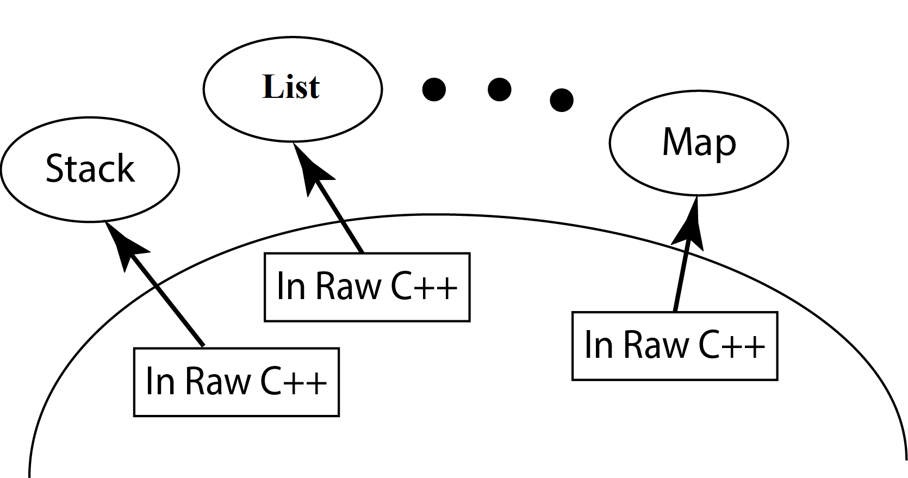
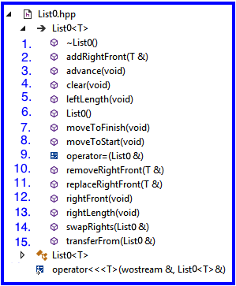

2.1 Primary ObjectivesThe primary objective of this lab is to provide you experience with:
|
 |
Steps:
components\include\Queue) to List0.hpp components\include\List foldercomponents\include\List, if it is not found there, you will earn a zeroList specific requirements:
Important Restrictions:
3. Testing
|
 |
The Grader's test cases:
Grading will be done running a more complete set of unit tests which will systematically stress your member function implementations